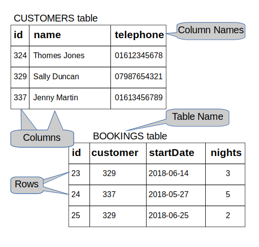
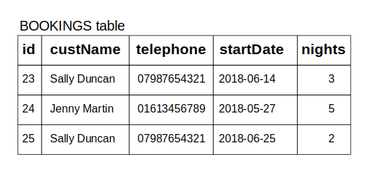

Database 1: Introduction to SQL
What will we learn today?
-
- Why do we need them?
- Different types of database
-
- What is SQL?
- What is a RDBMS?
- What characterises a relational database?
- Database modeling exercise
- Check your PostgreSQL installation
Communicating with the database using SQL
- Creating a new database
- Creating a table
- Inserting data
- Retrieving data
- Retrieving data with conditions
Introduction to databases
A database is a structured set of data held in a computer. It provides ways to store, retrieve and organize information.
Why do we need them?
In the past few weeks, you stored and retrieved data using files. This is fine for simple data but it can quickly become an issue as your application becomes more complex and needs to store and manipulate more complicated data. For example, imagine you want to develop the next biggest hotel booking application. You will need to store the list of hotels available for booking somewhere, and as you add more features, you will need to save users information, the reviews they post for each hotel, but also the bookings each user makes. You can see that the data you need to handle can become very complicated, especially when you need to consider that data are not static, as they can be updated or deleted. To work more effectively with data, we can then use a database, which present the following benefits:
- A database defines a structure for your data and the relationships between entities
- A database provides convenient and performant ways to safely store and retrieve data
- A database provides a mechanism to check the validity of your data
Different types of database
There are many different kinds of database and different implementations. Sometimes, a database type is a better fit to certain use case or certain problems. The most well-known database types include relational database, key/value database, graph database and document database (also known as NoSQL). For this class, we will focus specifically on relational database as they are the most widely used and supported. You can consult DB-Engines to see a ranking of the most used database, as you can see, there is a lot of them!
Introduction to PostgreSQL
"PostgreSQL is a powerful, open source object-relational database system that uses and extends the SQL language combined with many features that safely store and scale the most complicated data workloads. The origins of PostgreSQL date back to 1986 as part of the POSTGRES project at the University of California at Berkeley and has more than 30 years of active development on the core platform." (source: postgresql.org)
What is SQL?
- Pronounced S-Q-L or sequel
- Stands for Structured Query Language
- SQL is the standard language used to communicate with relational database
- SQL statements are used to query, create, update, delete records in a database
- SQL statements are executed by a RDBMS.
What is a RDBMS?
- Stands for Relational Database Management System
- It is a program that processes SQL statements to manage a relational database
- PostgreSQL is a RDBMS.
What characterizes a relational database?
As mentioned previously, a relational database is a specific type of database. Data is stored in tables of rows and columns as per the example below:

How about storing everything in one big table as shown below? Why isn't it a good idea?
A customer could have several bookings. If the customer changes their telephone number, you would have to update every single rows for this customer with their new number, which is more prone to errors. As a general rule, try to avoid duplication of data, and instead design your system in a way that you have a single source of truth for each piece of data. The example below is NOT a good solution.

Database modeling exercise
Scenario: You've been hired to create a database for a new company which wants to revolutionize the hotel booking market. The first task you've been given is to model how the company would store its data in a database. Here are your requirements:
- The company wants to store in the database all the hotels available on their website
- For each hotel, the company wants to record the name of the hotel, the number of rooms and the zipcode.
- The company also needs to store the information of customers who registered on their website with a name, an email and an address.
- Customers need to be able to record their bank details which consist of an account number and a sort code.
- Finally, as customers can book a room in an hotel starting on a specific date for a specific number of nights, the company wants to store the bookings.
With mentors help, model the database for this company. In particular, show the different entities, fields and relationships between each entity.
Check your PostgreSQL installation
Open a terminal in your laptop and verify the command psql -V returns the version of PostgreSQL. In psql, you can type use the command help to show the help menu. Within the command prompt, you can enter SQL statements and run them against PostgreSQL. To quit psql, enter the command \q.
Communicating with the database using SQL
All commands in the following need to be entered in a psql command prompt. However, sometimes it's easier to write the code in a file and then load the file with psql. For example, if you write your SQL code in a file called test.sql, you can then execute it with psql -d DATABASE_NAME -f test.sql.
Creating a new database
In a terminal, create a new database named cyf_hotels with the following command:
createdb cyf_hotels
Then connect to your database with:
psql cyf_hotels
Creating a table
Data are stored in tables. Let's first create a customers table to hold the details of customers.
CREATE TABLE customers (
id SERIAL PRIMARY KEY,
name VARCHAR(30) NOT NULL,
email VARCHAR(120) NOT NULL,
address VARCHAR(120),
city VARCHAR(30),
postcode VARCHAR(12),
country VARCHAR(20)
);
Few things to mention from the SQL statement above:
SERIAL PRIMARY KEYdefines the columnidas a unique identifier for each row. Moreover, this identifier will automatically incremented every time data is inserted.idis called the primary key of the tablecustomers.VARCHAR(20)defines the column to hold text data with a maximum length of 20 charactersNOT NULLdefines the column as not nullable, which means that you must set a value.- Other useful types include
INT,TEXT,BOOLEANandDATE. - The database will reject any values which don't match the type.
Exercise 1
- Create the
customerstable in thecyf_hotelsdatabase. - Verify that the table
customersis created with the psql command\dtwhich lists the existing tables. - Display the table
customersdefinition with the command\d customersand verify that it matches what you expect. - Create a new table
hotelsin thecyf_hotelsdatabase with the following columns: anid, aname, the number ofroomsand the hotelpostcode. Use the commands above to verify that the table is correctly created.
Now that we have a table to store customers and a table to store hotels, we can create a table to hold the bookings of customers for an hotel with the checkin date and the number of nights they intend to stay:
CREATE TABLE bookings (
id SERIAL PRIMARY KEY,
customer_id INT REFERENCES customers(id),
hotel_id INT REFERENCES hotels(id),
checkin_date DATE NOT NULL,
nights INT NOT NULL
);
In the above, customer_id and hotel_id are called foreign keys as they reference an id from a different table. This set a very strong constraint as you will not be able to create a booking for a customer id which does not exist in the customers table!
Exercise 2
- Create the table
bookingsin yourcyf_hotelsdatabase and verify that it is correctly created.
Inserting data
Once your customers, hotels and bookings table are created, you can insert data with the following SQL statements:
INSERT INTO customers (name, email, address, city, postcode, country) VALUES ('John Smith','j.smith@johnsmith.org','11 New Road','Liverpool','L10 2AB','UK');
INSERT INTO hotels (name, rooms, postcode) VALUES ('Triple Point Hotel', 10, 'CM194JS');
INSERT INTO bookings (customer_id, hotel_id, checkin_date, nights) VALUES (1, 1, '2019-10-01', 2);
The data you insert should be of the same type with your table definition. For example, the following insert statement will fail:
INSERT INTO bookings (customer_id, hotel_id, checkin_date, nights) VALUES (1, 1, '2019-14-01', 2);
Exercise 3
- Run the 3 SQL statements above.
- Insert yourself in the
customerstable. - Insert the following 3 hotels in the
hotelstable:- The
Triple Point Hotelhas 10 rooms, its postcode isCM194JS - The
Royal Cosmos Hotelhas 5 rooms, its postcode isTR209AX - The
Pacific Petal Motelhas 15 rooms, its postcode isBN180TG
- The
- Try to insert a booking for a customer id which does not exist in the
customerstable (for example ID100). What is happening and why?
Retrieving data
Previously, you have inserted data in your tables. How do you make sure these data have been inserted correctly? The following SQL statement is used to request data from a specific table:
SELECT * FROM customers;
Exercise 4
- Use the above SQL statement to display all the data inserted in the
customerstable. - Use the above SQL statement to display all the data inserted in the
hotelstable. - Use the above SQL statement to display all the data inserted in the
bookingstable.
Retrieving data with conditions
Actually, the SELECT statement is very powerful and you will see you can request a lot of different things with it. Have you seen the * character in the SQL statement above? It means that you want to see the data for all the columns of the table. What if you want to only return specific columns? For example, to retrieve all customers name and address from the table customers:
SELECT name,address FROM customers;
Sometimes, you want to retrieve only data which verify a specific condition. In this case, you can use a WHERE clause. For example, to retrieve all hotels having more than 7 rooms:
SELECT * FROM hotels WHERE rooms > 7;
To retrieve the customer name and address with id 1:
SELECT name,address FROM customers WHERE id = 1;
To retrieve all the bookings starting after 2019/10/01:
SELECT * FROM bookings WHERE checkin_date > '2019/10/01';
To retrieve all the bookings starting after 2019/10/01 for a minimum of 2 nights:
SELECT * FROM bookings WHERE checkin_date > '2019/10/01' AND nights >= 2;
To retrieve all the hotels with the postcode CM194JS or TR209AX:
SELECT * FROM hotels WHERE postcode = 'CM194JS' OR postcode = 'TR209AX';
Exercise 5
- Execute the file
cyf_hotels_exercise5.sqlwhich will reset your existing tables and insert more data in thecustomers,hotelsandbookingstables. (hint: in the terminal, usepsql -d cyf_hotels -f cyf_hotels_exercise5.sql). - Retrieve all information for the customer Laurence Lebihan.
- Retrieve all customers name living in UK.
- Retrieve the address, city and postcode of Melinda Marsh.
- Retrieve all hotels located in the postcode DGQ127.
- Retrieve all hotels with more than 11 rooms.
- Retrieve all hotels with more than 6 rooms but less than 15 rooms.
- Retrieve all hotels with exactly 10 rooms or 20 rooms.
- Retrieve all bookings for customer id 1.
- Retrieve all bookings for more than 4 nights.
- Retrieve all bookings starting in 2020.
- Retrieve all bookings before 2020 for less than 4 nights.
Homework
- Create a new database called
cyf_classes(hint: usecreatedbin the terminal) - Create a new table
mentors, for each mentor we want to save their name, how many years they lived in Glasgow, their address and their favourite programming language. - Insert 5 mentors in the
mentorstable (you can make up the data, it doesn't need to be accurate ;-)). - Create a new table
students, for each student we want to save their name, address and if they have graduated from Code Your Future. - Insert 10 students in the
studentstable. - Verify that the data you created for mentors and students are correctly stored in their respective tables (hint: use a
selectSQL statement). - Create a new
classestable to record the following information:- A class has a leading mentor
- A class has a topic (such as Javascript, NodeJS)
- A class is taught at a specific date and at a specific location
- Insert a few classes in the
classestable - We now want to store who among the students attends a specific class. How would you store that? Come up with a solution and insert some data if you model this as a new table.
- Answer the following questions using a
selectSQL statement:- Retrieve all the mentors who lived more than 5 years in Glasgow
- Retrieve all the mentors whose favourite language is Javascript
- Retrieve all the students who are CYF graduates
- Retrieve all the classes taught before June this year
- Retrieve all the students (retrieving student ids only is fine) who attended the Javascript class (or any other class that you have in the
classestable).